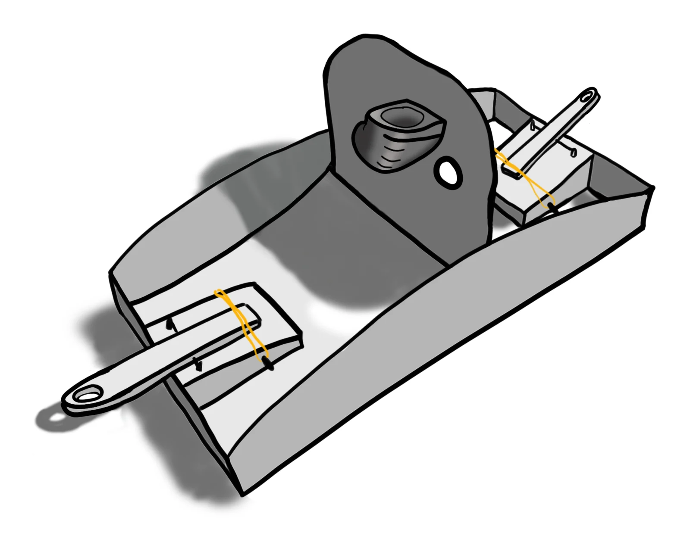
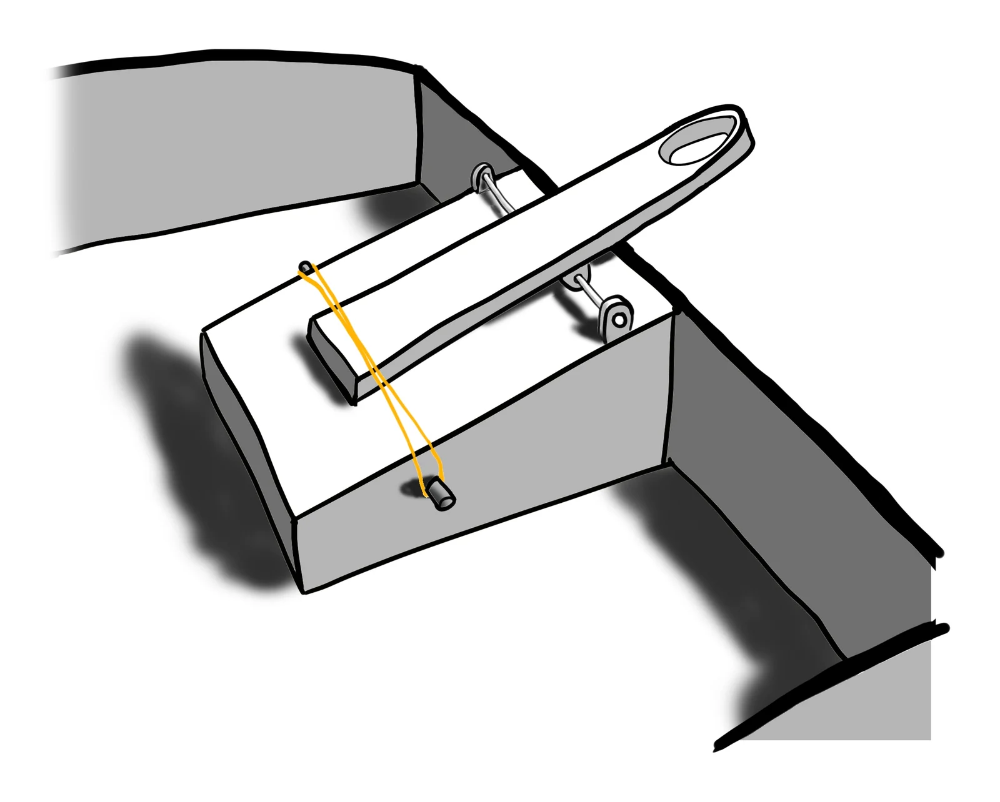
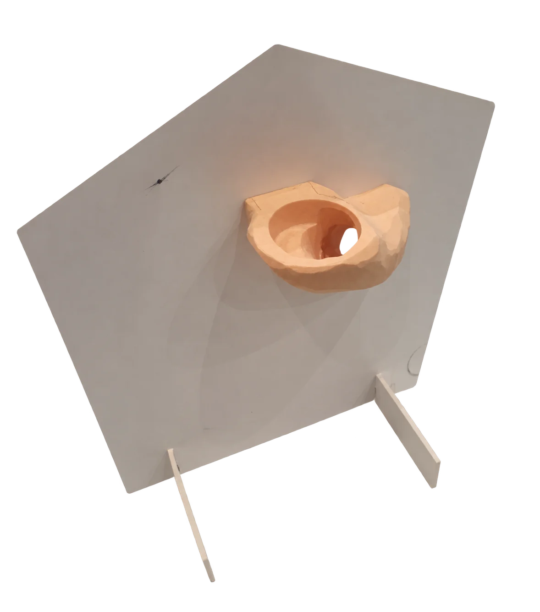
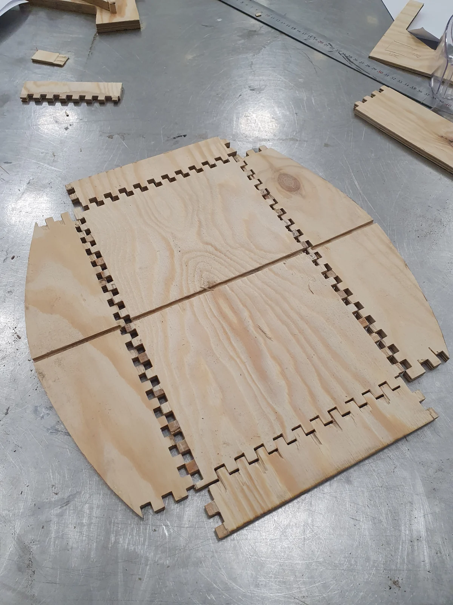
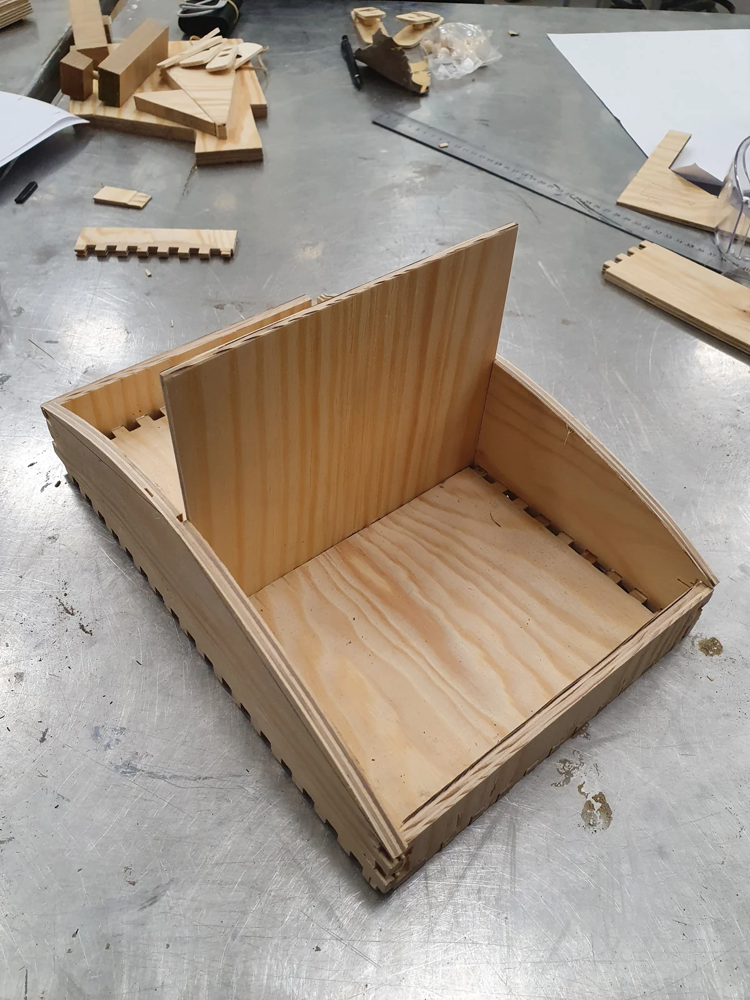
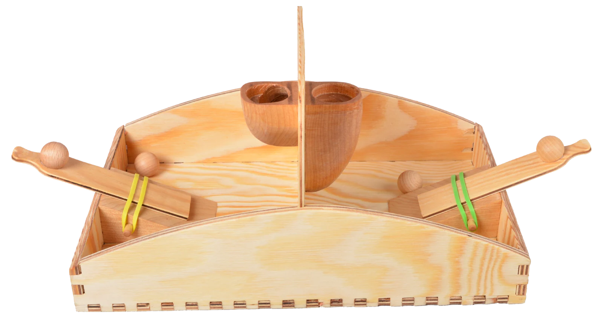
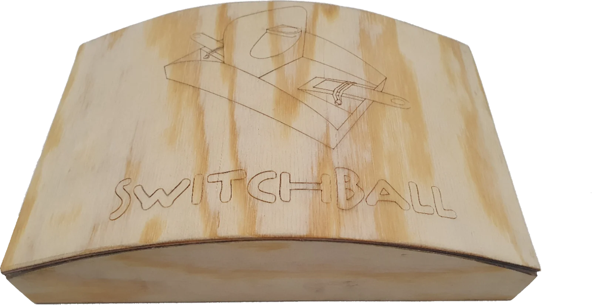

Rubber Band Toy
A strict material brief became a working two-player tabletop game. I developed the concept, built the parts and refined the play experience through physical prototyping.

- Role
- Individual project
- Duration
- 8 weeks
- Materials
- Wood and rubber bands
- Focus
- Prototyping and iteration
The brief
Design a toy for a specific person using rubber bands and only one additional material, without glue, nails or mechanical fasteners. I chose my sports-loving cousin and developed a compact tabletop game for two players.
Choosing wood pushed me to solve assembly and movement through the materials themselves. Early sketches explored the shared playing field, the launchers and the rubber-band attachments.


Prototyping and iteration
I used early physical models to turn the sketches into something I could build and try. Testing the launcher and target together helped me evaluate the layout and decide what to refine.
These tests guided the next iteration and the final arrangement. The goal was a clear, tactile interaction: load a ball, choose an angle and release the launcher.

Making the prototype
I translated the sketches into interlocking panels, sliding components and dowel-held details. Box joints hold the frame together without glue, while a tongue-and-groove centre board connects the two play areas.
The workshop process exposed the difference between ideal geometry and real material behaviour. I refined the joints and fit so the parts could be assembled by hand and stay together during play.


The result
The finished wooden game has two opposing launchers and central targets. Rubber bands power the action and remain visible, making the mechanism easy to understand.
Both players begin with an equal number of balls. A successful basket sends a ball to the opponent, and the first player to clear their side wins. The mirrored layout keeps both players involved while leaving room for skill, timing and playful competition.


What I learned
I learned how to move from an idea to a working prototype through sketching, building and iteration. Testing early models helped me identify what needed to change and guide the next version. Making the final parts strengthened my understanding of material behaviour, tolerances and assembly, connecting design decisions to how a product is made and used.
- Skills I developed
-
- Turning sketches into functional physical prototypes.
- Using testing to guide design decisions and iteration.
- Designing parts for reliable fit and assembly.
- Tools & methods
-
- Hand sketching and physical mock-ups.
- Laser cutting and woodworking.
- Physical prototypes and play testing.